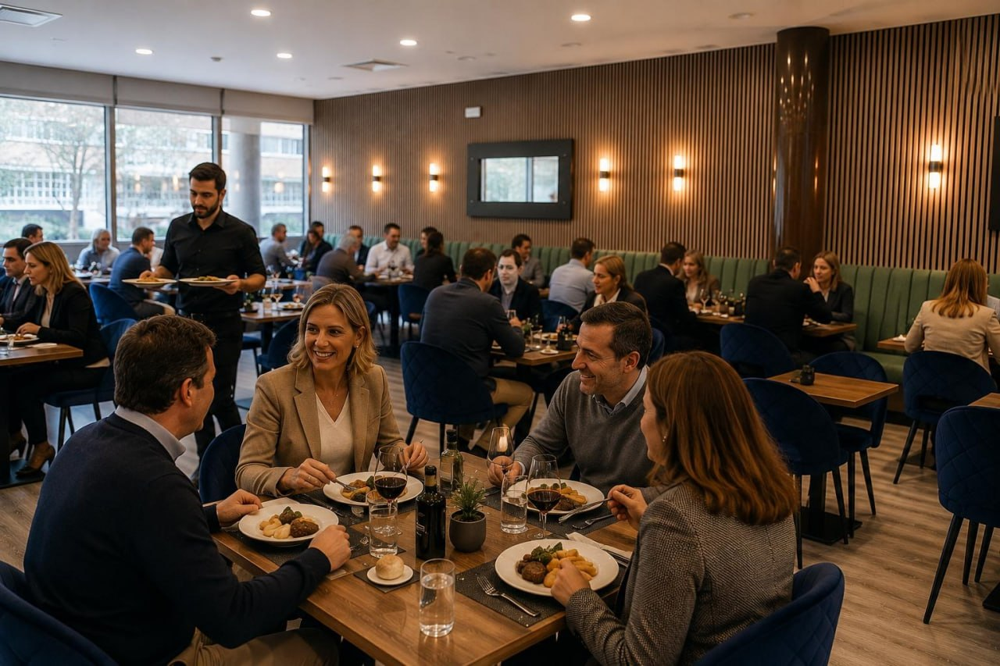
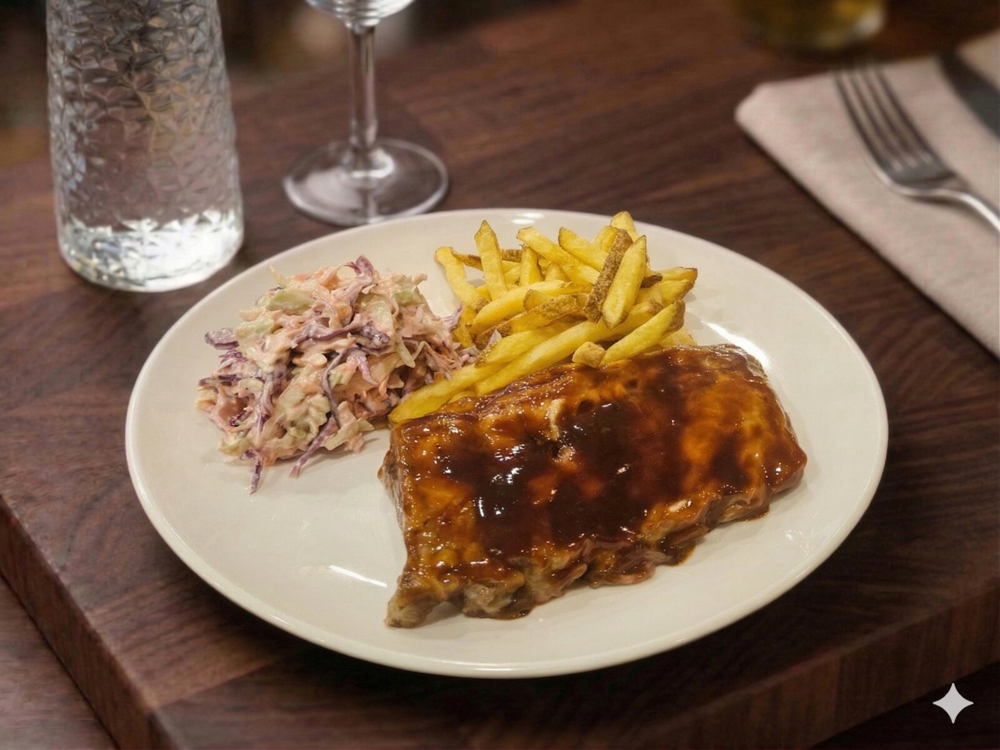
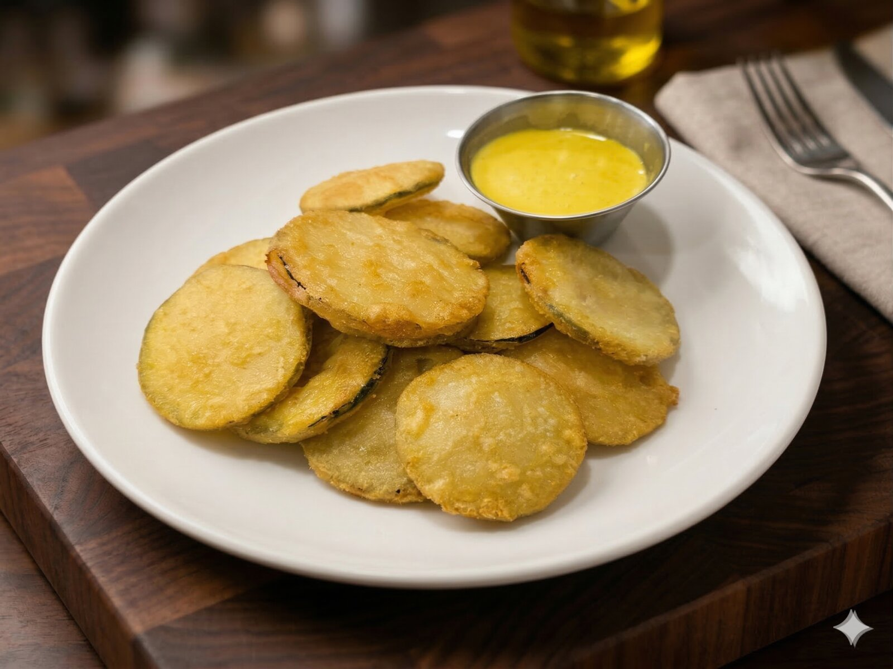
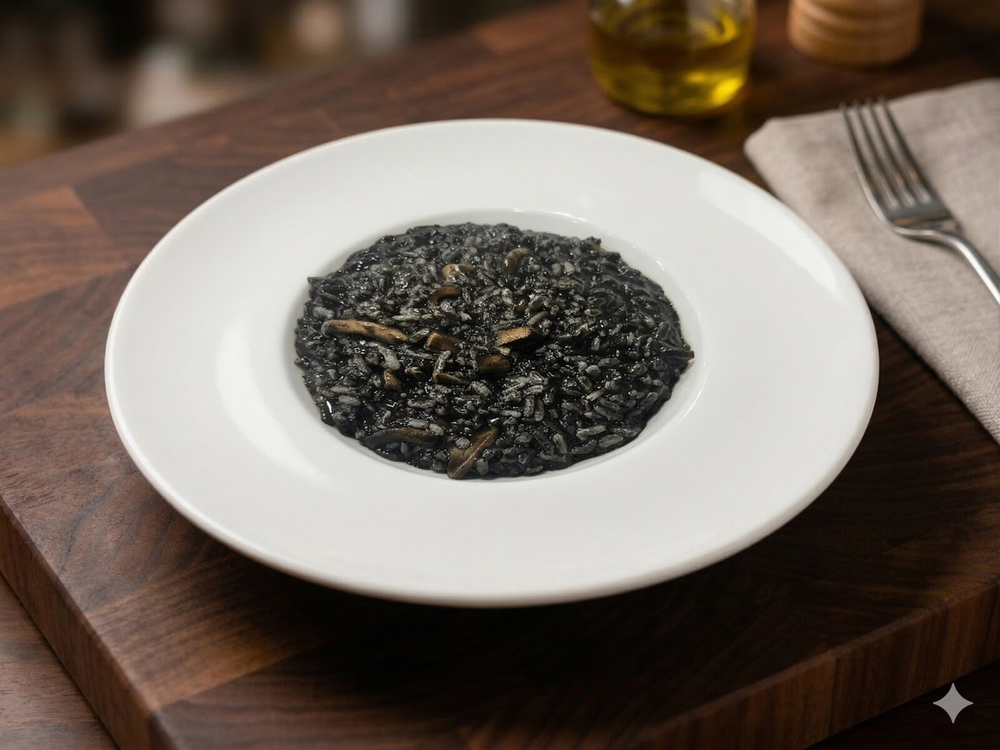
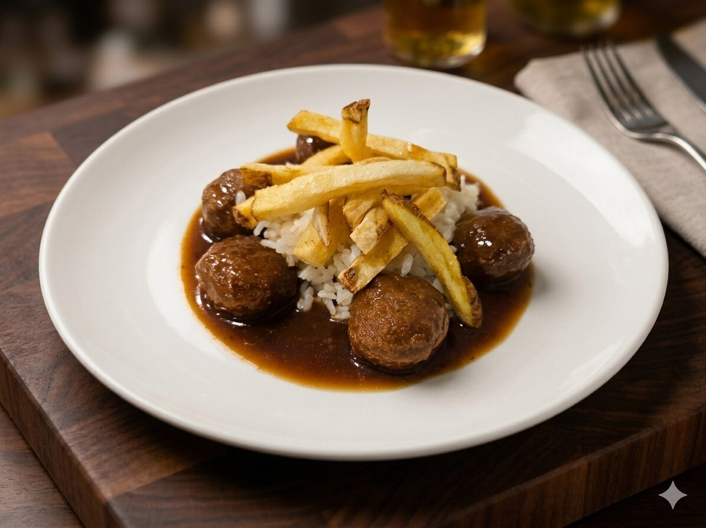
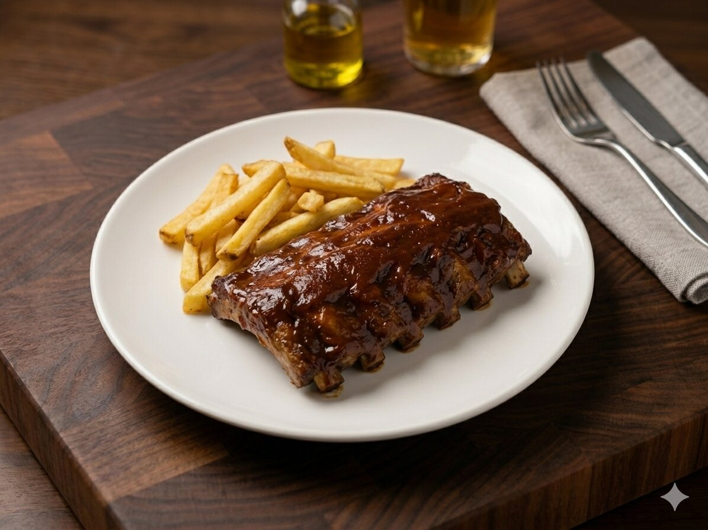
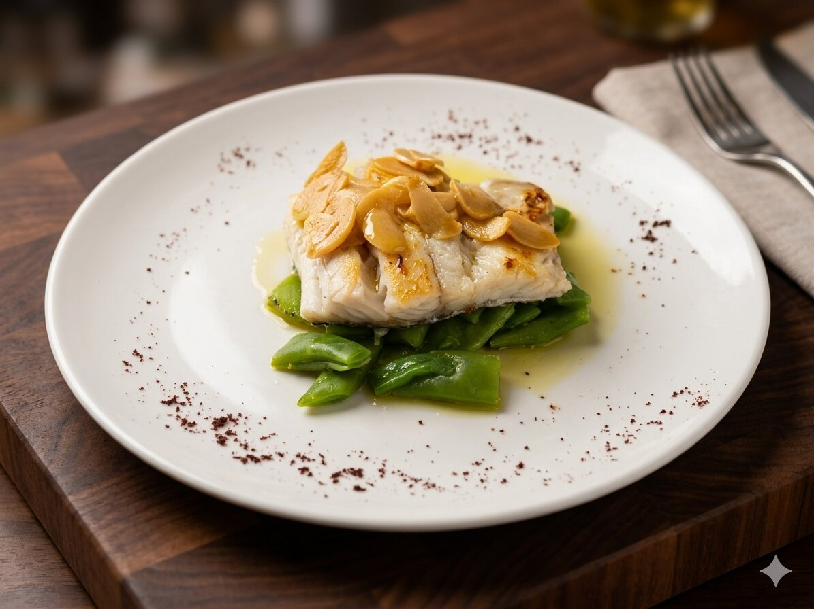
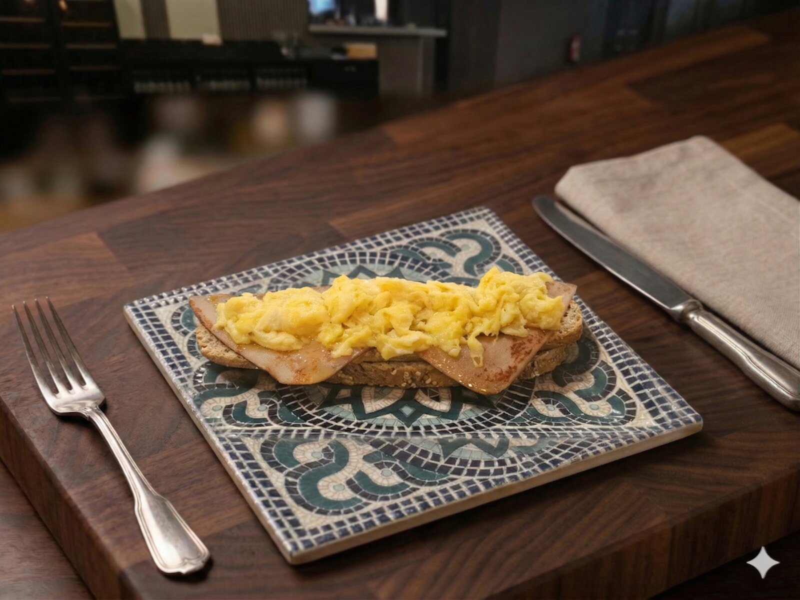
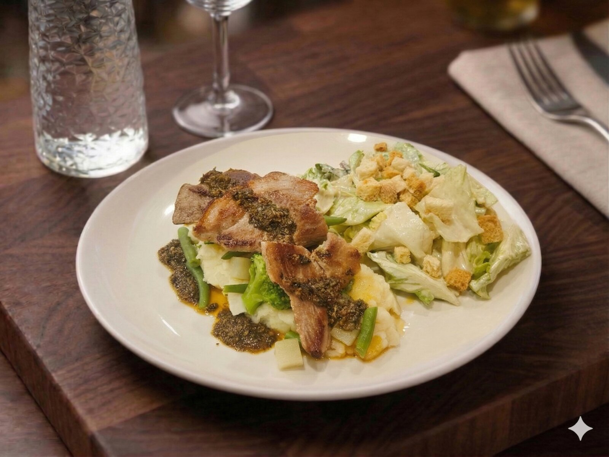
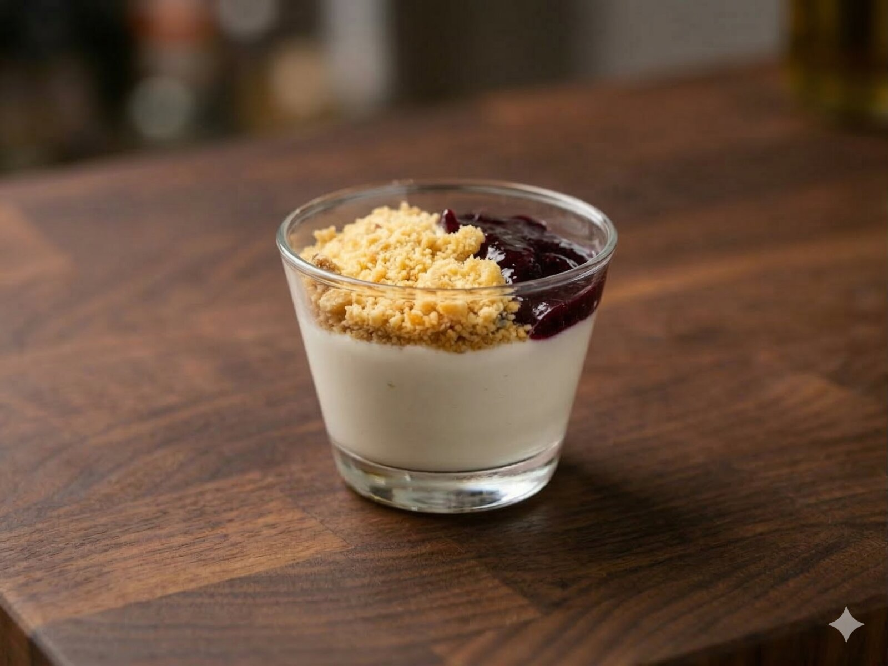

Menú del día, menú Shelby y comida casera todos los días.
Desayunos desde primera hora, menú del día con nivel, take away rápido, delivery y eventos para equipos en la zona Julián Camarillo.
Para hoy, para llevar, para compartir.
Desayunos que arrancan el día con energía, menú del día que sabe a cocina de verdad, take away para no parar, y un espacio para quedar con clientes, el equipo o celebrar el viernes como toca.

Platos contundentes
Sabores reconocibles, raciones generosas y tiempos pensados para comer bien entre semana.
De la oficina a la mesa en un paso.
Menú del día
Primero, segundo y postre con bebida. Cocina casera que sabe a verdad, cada día.
Menú Shelby
Platos contundentes para los que vienen con hambre: costillas, secreto, hamburguesas y mucho más.
Take away
Pide, recoge en minutos y disfruta sin perder el ritmo de tu jornada. Menú completo 15,90€, Shelby 13,90€.
Desayunos
Arranca el día con energía: café recién hecho, tostadas, tortilla y opciones fit para todos los gustos.
Eventos
Comidas de grupo, cócteles, celebraciones... el local entero puede ser tuyo.
Comida que entra por los ojos.








Sin complicaciones. Con sabor.
En Smithers tienes todo lo que necesitas para comer bien, rápido y a gusto. Tú solo elige, que de lo demás nos encargamos nosotros.
Lo que siempre preguntan.
Las dudas más frecuentes sobre Smithers Restaurant, respondidas.
¿A qué hora abren para desayunar en Albasanz?
Abrimos de lunes a viernes a las 7:00 am. Servimos desayunos hasta las 12:00. Estamos en C/ Albasanz 16, 28037 Madrid.
¿Cuánto cuesta el menú del día?
El menú del día cuesta 16,50€ e incluye primero, segundo, postre, pan y bebida. También tenemos el Menú Shelby por 14,50€ (plato contundente + bebida).
¿Se puede reservar mesa?
Sí, puedes reservar a través de Google Maps Reserve o llamando al 911 699 622.
¿Hacen catering para empresas?
Sí, llevamos Smithers a tu oficina con menús ejecutivos, bandejas de catering y coffee breaks para reuniones en empresas de la zona.
¿Tienen comida para llevar cerca de Julián Camarillo?
Sí, puedes pedir take away desde 13,90€. Recoges en el restaurante (C/ Albasanz 16, zona Julián Camarillo) o pedimos delivery a través de Glovo.
¿Aceptan tickets restaurante?
Aceptamos las tarjetas de restauración de Pluxee, Edenred y Déjeuner, además de efectivo y tarjetas de crédito y débito. Los cheques o vales de papel no los admitimos.
¿Se puede aparcar cerca?
Sí, hay aparcamiento en la calle Albasanz y calles aledañas. También parking público en los alrededores del polígono Julián Camarillo.
¿Cuál es el metro más cercano?
Las paradas más cercanas son Suanzes y Ciudad Lineal (Línea 5), a unos 10-15 minutos andando.
¿Admiten grupos grandes?
Sí, hacemos comidas de empresa y eventos para hasta 140 personas sentadas o 180 en cóctel. Pide presupuesto sin compromiso.
¿Cuál es el horario?
Lunes a viernes de 7:00 a 17:00. Cerramos sábados, domingos y festivos.
¿Dónde está Smithers Restaurant?
Estamos en C/ Albasanz 16, 28037 Madrid, en la zona de Julián Camarillo.
¿Hacen take away?
Sí, puedes pedir para llevar desde 13,90€. También tenemos servicio a domicilio a través de Glovo.
¿Cuál es el aforo máximo para eventos?
Hasta 140 personas sentadas en comedor o 180 personas en formato cóctel.
¿Tienen opciones sin gluten?
Sí, consulta con el restaurante para conocer los platos sin gluten disponibles.
¿Aceptan tarjetas de crédito?
Sí, aceptamos todo tipo de tarjetas de crédito y débito.
¿Cómo puedo pedir delivery?
Puedes pedir delivery a través de Glovo. Busca 'Smithers Restaurant Madrid' en la aplicación Glovo.